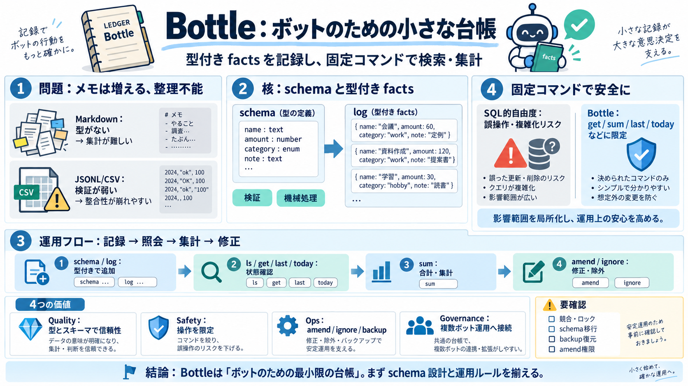

Karpathy's LLM wiki idea spawns a cottage industry of personal knowledge bases — AI Chat Daily
AI CHAT/Daily Tuesday, September 15, 2026Subscribe Main content # Karpathy's LLM wiki idea spawns a cottage industry …

AI CHAT/Daily Tuesday, September 15, 2026Subscribe Main content # Karpathy's LLM wiki idea spawns a cottage industry …
## 适用场景 研究 — 持续阅读论文，逐步构建领域知识图谱 读书 — 按章节收录，自动构建角色、主题、情节的关联网络 个人成长 — 日记、文章、播客笔记，构建自我认知的结构化图景 竞品分析 — 持续跟踪竞品动态，…
& mut & u8< usize> let available = self.max_size - self.buffer.len(); let available = self.max_size - self.buffer.len()…
Accel Partners Partech IN-Q-TEL - US Fujitsu Tenity Stanford [...] ## Bottle Rocket's Competitors and alternates [...] |…
OSS Insight Rust Database - Ranking | OSSInsight # Rust Database— Open Source Repository Rankings Rankings and trends…